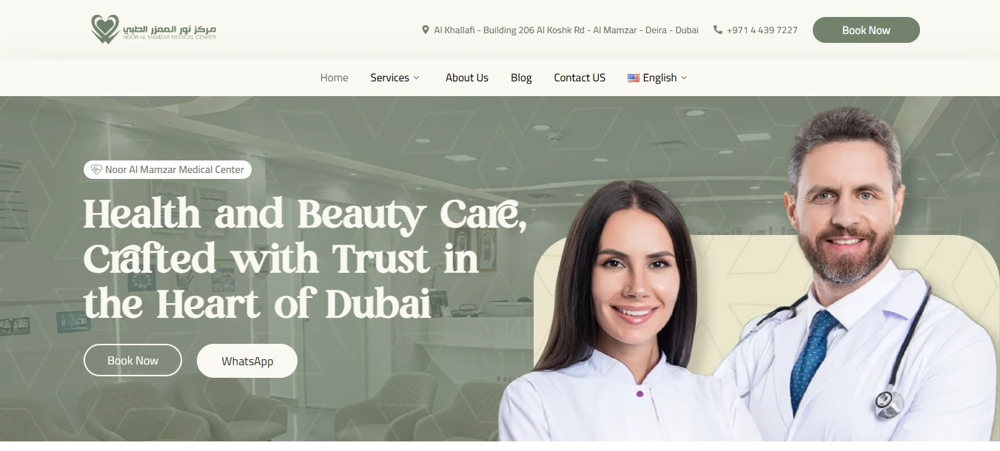
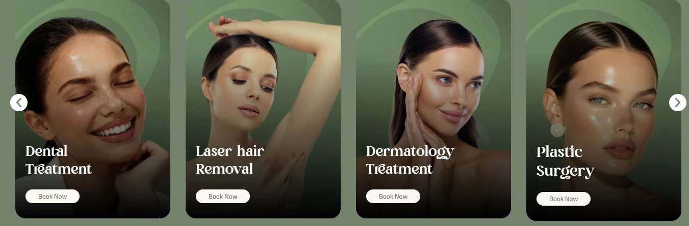
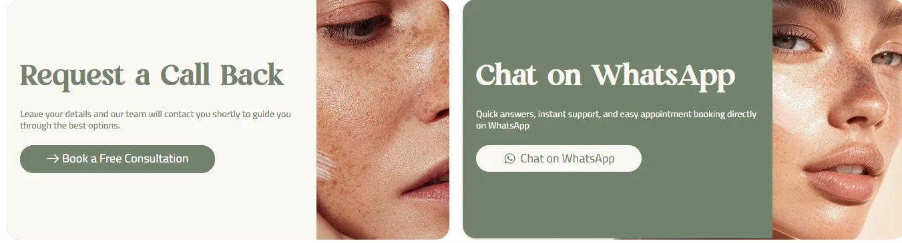
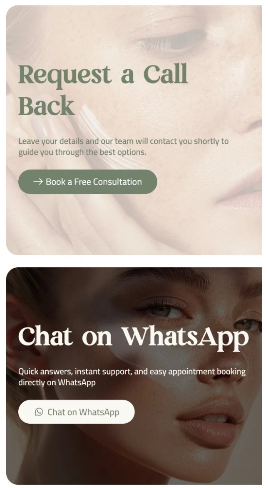
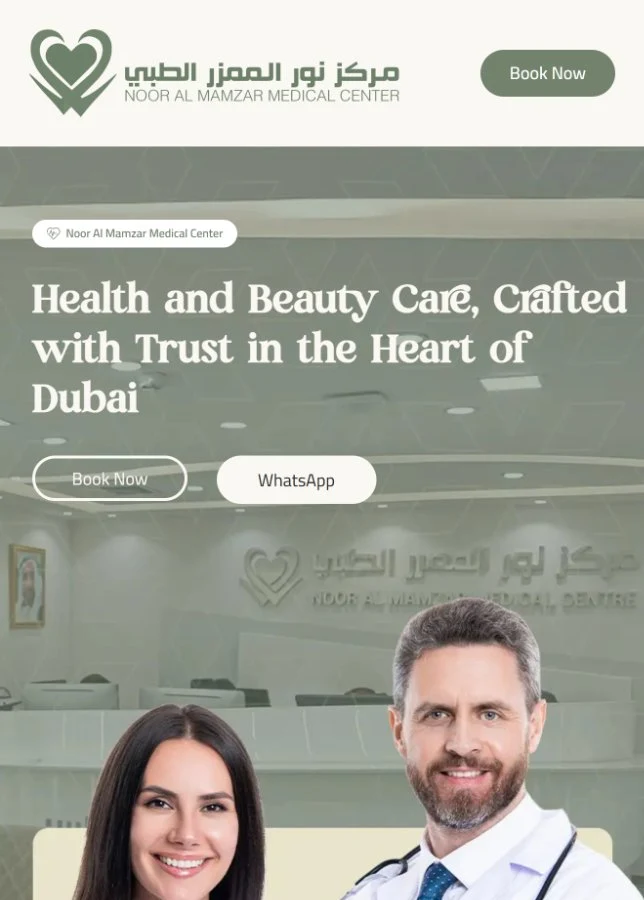

موقع ثنائي اللغة ومتعدد التخصصات، لازم يكسب الثقة مرتين.
Noor Al Mamzar بتشغل تحت سقف واحد تخصصات الأسنان، إزالة الشعر بالليزر، الجلدية، وجراحة التجميل، لجمهور في دبي بيتنقل بين العربي والإنجليزي يوميًا — ده بريف مختلف تمامًا عن عيادة بلغة واحدة. كل عنوان، وكل رقم، وكل دعوة لاتخاذ إجراء، لازم تحمل نفس الثقة في الاتجاهين، مش تبان كأنها ترجمة لصقت على تصميم إنجليزي.
النطاق كان تصميم فقط: نظام موصّف بالكامل على فيجما لفريق تطوير تاني ينفذه، من غير فرصة إني أقعد مع التطوير وألحق التفاصيل الصغيرة — وده خلى قرارات أكتر لازم تتاخد جوه الملف نفسه أكتر من المعتاد.
الإثبات وطريقتا التواصل الاتنين، قبل ما المستخدم يعمل سكرول.
مع أربع تخصصات ولغتين بيتنافسوا على نفس الهيدر، الهيرو كان لازم يعمل تلات وظايف في نفس الوقت: يقول العيادة دي إيه، يعرض الأرقام اللي بتأكد كلامه، ويوفّر طريقتين للتواصل — من غير ما يتحول لحيطة مزدحمة بمطالب متنافسة.
ثنائية اللغة بالتصميم، مش بالافتراض
خط rh zak font للعناوين العربية وخط Mirado للإنجليزية متطابقين في الوزن والمساحة، عشان النسخة العربية ما تبانش كإضافة مترجمة بعد كده.
الأرقام قبل الكلام
شريط 100,000+ مريض، 10,200+ عملية، 53 دكتور، 15 سنة خبرة، موجود مباشرة تحت الهيرو، قبل أي وصف للخدمات.
الدعوتان الاتنين موجودين في الهيرو
Book Now وWhatsApp جنب بعض تحت العنوان، عشان الزائر اللي قرر بالفعل ما يحتاجش يعمل سكرول عشان يلاقي أي الطريقتين.
باليتة سيچ وكريمي، أدفأ من الأزرق الطبي اللي الفئة دي بتعتمد عليه عادةً.
بدل الأزرق المائل للأخضر الفاتح اللي أغلب العيادات في نفس الفئة بتستخدمه، الهوية هنا بتعتمد على أخضر سيچ هادي فوق سطح كريمي دافي — أقرب لباليتة سبا وعافية من باليتة مستشفى، وبرضو بتفضل واضحة جنب الحبر القريب من الأسود المستخدم في النصوص.

الباليتة فضلت ضيقة — أرضية سيچ واحدة، سطح كريمي واحد، وتلات درجات رمادي مساعدة للتدرج — عشان أربع خدمات مختلفة جدًا، من الأسنان لجراحة التجميل، تقدر تتشارك فيها من غير ما أي خدمة تحتاج قصة لون خاصة بيها.
عنوان إنجليزي
Mirado
نص إنجليزي
Cairo
عنوان عربي
rh zak font
نص عربي
Cairo
صورة واحدة متصلة بتنقسم لنصين؛ على الموبايل، بتتحول لصورتين منفصلتين.
على الديسكتوب، كارتي "Request a Call Back" و"Chat on WhatsApp" موجودين جنب بعض فوق صورة فوتوغرافية واحدة متصلة بتمتد ورا الكارتين الاتنين — صورة واحدة بتخدم دعوتين مختلفتين لاتخاذ إجراء. على الموبايل، الصورة دي مش مجرد معمولها تصغير: بتتبدل بصورتين مقصوصتين بشكل مستقل، كل واحدة متناسقة الدرجة مع كارتها — قصة دافية فاتحة ورا فورم طلب المكالمة، وقصة أغمق وأكتر جوًا ورا WhatsApp — إعادة بناء مقصودة للتخطيط المرصوص فوق بعض، مش نسخة متصغرة من صورة الديسكتوب.


سُلّم كنظام جاهز للبناء، مش مجموعة شاشات.
مع عدم وجود بناء ووردبريس أو إليمنتور في النطاق هذه المرة، كان المُخرج ملف فيجما موصّف بالكامل: متغيرات مكوّن لكل نمط متكرر — بلاطة الإحصائية، كارت الخدمة، الهيرو بدعوتَي الإجراء — واللغتان الاتنين موضوعتان جنب بعض، والخط والمسافات والألوان موثّقة كعناصر قابلة لإعادة الاستخدام، عشان فريق تطوير منفصل يقدر يبني الموقع من غير ما يحتاج يخمّن.

شوية قرارات بتقرا كقرارات UX، مش ديكور.
وأنا براجع المشروع بعين UX، تلات قرارات بتعمل أكتر من اللي بتبان بيه:
نظام ثنائي اللغة، مش نظام مترجم
rh zak font وMirado متناسقين في الوزن والنسبة، عشان تبديل اللغة ما يحسسك إنك بدّلت موقع كامل.
علامة استفهام كعنصر بصري
عنوان "Why Choose Noor Almamzar" بيستخدم علامة استفهام ديكورية مكبّرة ورا كلمة "Choose" مميّزة بشكل حبة دوائية — عنوان قسم جاهز اتحول لعنصر محدد وممكن تملكه في الهوية.
قالب صورة واحد لكل دكتور
كل بورتريه في كاروسيل "Meet Our Expert Team" بيستخدم نفس معالجة الاستوديو بالدرجة الخضراء، عشان مجموعة دكاترة مصوّرين كل واحد لوحده تبان كفريق واحد متناسق ومُدار بصريًا.
دعوتان لاتخاذ إجراء، متكررتان — ومحدش يقدر يتنافس معاهم بتالتة.
Book Now وWhatsApp فضلوا هما الوحيدين في الصفحة كلها — متكررين في الهيرو، وبعد كاروسيل الخدمات، ومرة تانية في قسم طلب المكالمة المخصص — من غير ما ينضم ليهم دعوة تالتة أو رابعة متنافسة، عشان القرار يفضل ثنائي أي ما كان مكان الزائر في الصفحة.
عيادة واحدة، بتُقرأ نفس القراءة في لغتين.
في أي لغة يوصل ليها الزائر، نفس شريط الإحصائيات، ونفس نمط الدعوتين، ونفس هوية السيچ الدافية بتفضل مستمرة — موصّفة كنظام ثنائي اللغة واحد على فيجما، بدل نسختين لغويتين لازم تتابعهم يدويًا عشان يفضلوا متطابقين.